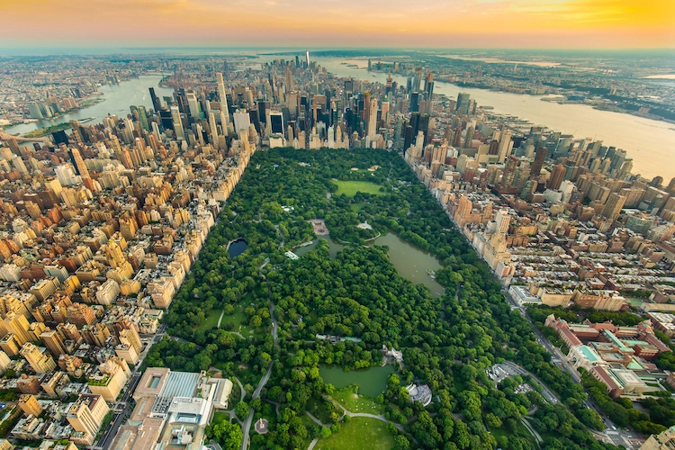

New York
22.04.2021

A little over 8 million people live in New York City. That means 1 in
every 38 people in the United States call the city home.
More than 800 languages are spoken in New York City, making it the most
linguistically diverse city in the world. 4 in 10 households speak a
language other than English.
Oysters were so popular in New York in the 19th century that the shells
were used to pave Pearl Street. They were also used for lime for the
masonry of the Trinity Church.
France gifted the Statue of Liberty to the United States in 1886 for
its centennial celebration. The statue was shipped as 350 pieces in 214
crates and took 4 months to assemble at its current home on Ellis Island.
New York City’s Federal Reserve Bank has the largest gold storage in
the world. The vault is 80 feet below street level and contains $90
billion in gold.
The New York Public Library has over 50 million books and other items
and is the second largest library system in the nation after the Library of Congress. It is also the 3rd largest library in the world.
The United Nations headquarters was established in New York City in
1952 after World War II.
The first pizzeria in the United States opened in NYC in 1895. Since
the 1960s, the price of a slice of pizza has been roughly the same price
as a subway ride, generating the idea of “Pizza Principle” among economists.
The borough of Brooklyn alone would be the fourth largest city in the
United States. Queens would also rank fourth nationally.
Times Square is named after the New York Times. It was originally called
Longacre Square until the Times moved there in 1904.
New York City became the first capital of the United States in 1789.
More Chinese people live in New York City than any other city outside
of Asia. More Jewish people live there than any other city outside of
Israel.
Liberty Statue
22.04.2021

The Statue of Liberty is located in New York on Liberty Island. It is a statue of a woman holding a torch in her right hand and a tablet in her left hand with the date of the Declaration of Independence in Roman numerals: July 4, 1776. Her crown has seven points that represent rays of light and also the seven seas and continents; the original name for the statue is “Liberty Enlightening the World.” There are broken chains, or shackles, at her feet that also symbolize her freedom.
Central Park
22.04.2021

Arguably one of the most famous parks in the world, Central Park is
a manmade wonder. Not only is it the first public park built in America,
but it is also one of the most frequently visited, with over 25 million
guests per year.
Set in the middle of bustling Manhattan, its grounds serve as a safe
haven, not only for athletes, daydreamers, musicians, and strollers, but
also for teems of migratory birds each year. One can spend an entire
peaceful day roaming its grounds, gazing upon nearly 50 fountains, monuments,
and sculptures or admiring its 36 bridges and arches.
With recreational facilities abounding, the more energetic won’t have
a problem finding a spot to skate, pedal, row, dribble, or climb to his or
her heart’s delight. Although Central Park has 21 official playgrounds,
we like to think of it as one gigantic jungle gym in its peak season.
Manhattan Bridge
22.04.2021

The Manhattan Bridge originally carried four lines of trolley traffic, four lines of elevated trains, two carriage lanes, and two pedestrian walkways, making it among the most heavily loaded bridges ever built. The upper rail lines and central carriageway have since been converted for automobile traffic, and the trolley lines have been converted to carry subway lines.
New York's About
Liberty Statue's About
Central Park's About
Manhattan Bridge's About